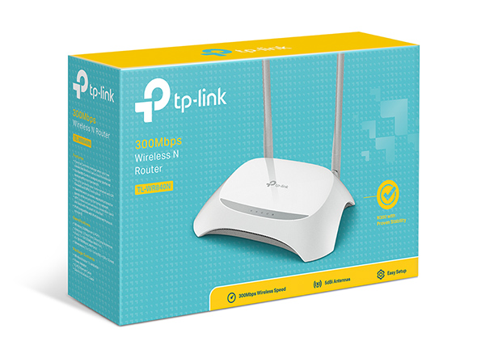

¿Cansado de los puntos ciegos de Wi-Fi? El TP-Link 840N es la solución más económica y potente para extender tu cobertura en casa u oficina pequeña.

✅ Velocidad N de 300 Mbps: Ideal para streaming en HD y juegos casuales sin interrupciones.
✅ 2 Antenas Potentes (5dBi): Garantizan una señal estable y fuerte, eliminando las "zonas muertas".
✅ Control Parental: Administra cuándo y cómo pueden conectarse los dispositivos de tus hijos.
✅ Fácil Configuración: Se instala en minutos con su interfaz web intuitiva o la App Tether.
Precio Especial: $ 19.01
¡Comprar Ahora y Olvidar la Mala Señal!